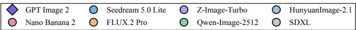

先说结论。通用视觉模型正在从静态表征转向 world model；ImageTime 给出了一种检查静态 image model 是否含有时序结构的方法。 把 image model 的评估从单图质量/图文对齐推进到“能否想象有时间顺序的视觉过程”。

Figureure 3 · | Radar view of prompt-only capability scores across all eight evaluatFigure 3 | Radar view of prompt-only capability scores across all eight evaluated models. The axes correspond to C0 and C2–C9; C1 is omitted because reference grounding is not applicable without a reference image. The faint purple envelope highlights the GPT Image 2 capability profile, while all model contours and markers are retained for comparison.这张图/表用于判断 Can Image Models Imagine Time? ImageTime 的实验收益来自哪里。重点看替换、消融或跨模型设置下趋势是否一致，而不是只看单个最高分。Static Identity L2 Spatial L3 Object L4 Interaction L5 Causal L6 Constraint Figure 2 | OveStatic Identity L2 Spatial L3 Object L4 Interaction L5 Causal L6 Constraint Figure 2 | Overview of the ImageTime task formulation and failure taxonomy. A detailed action prompt specifies four ordered key states: initial state, action onset, transition, and final state. The figure illustrates common failure modes such as premature final states, missing interactions, identity or scene drift, object duplication, and causal-order violations, and links them to the L0–L6 capability tree.这张图概括 Can Image Models Imagine Time? ImageTime 的整体方法流程。阅读时先看模块之间传递的训练信号，再看作者如何把目标拆成可优化的子问题。
核心问题
通用视觉模型正在从静态表征转向 world model；ImageTime 给出了一种检查静态 image model 是否含有时序结构的方法。